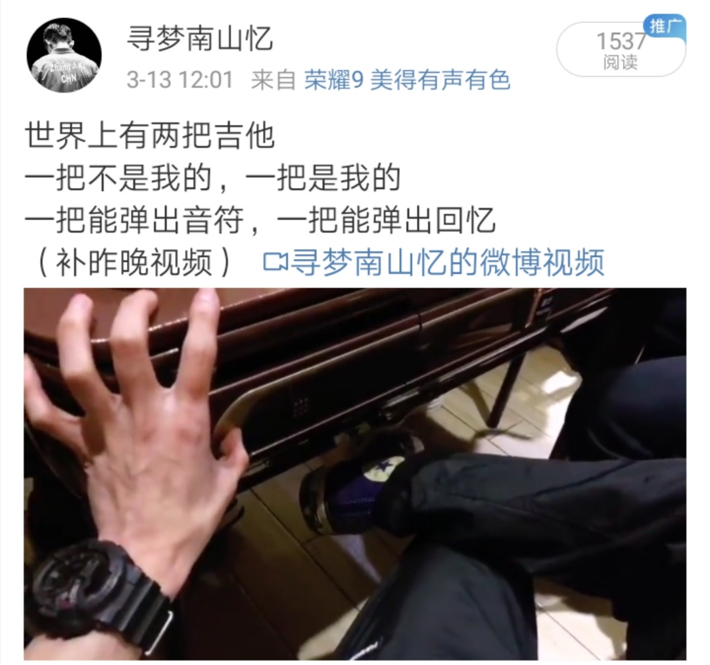
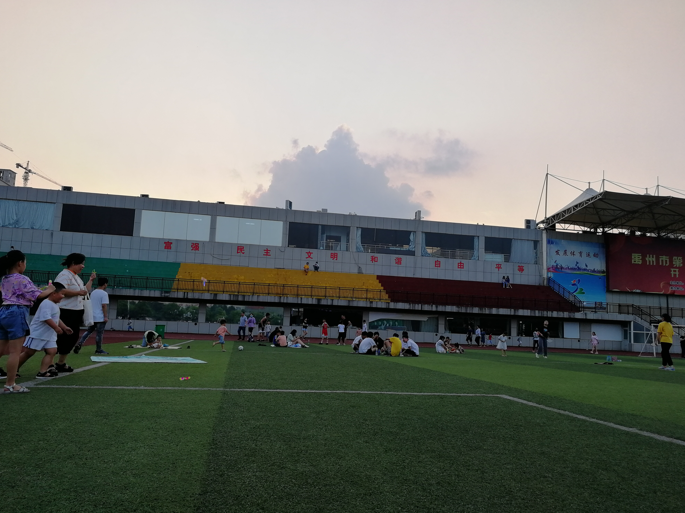
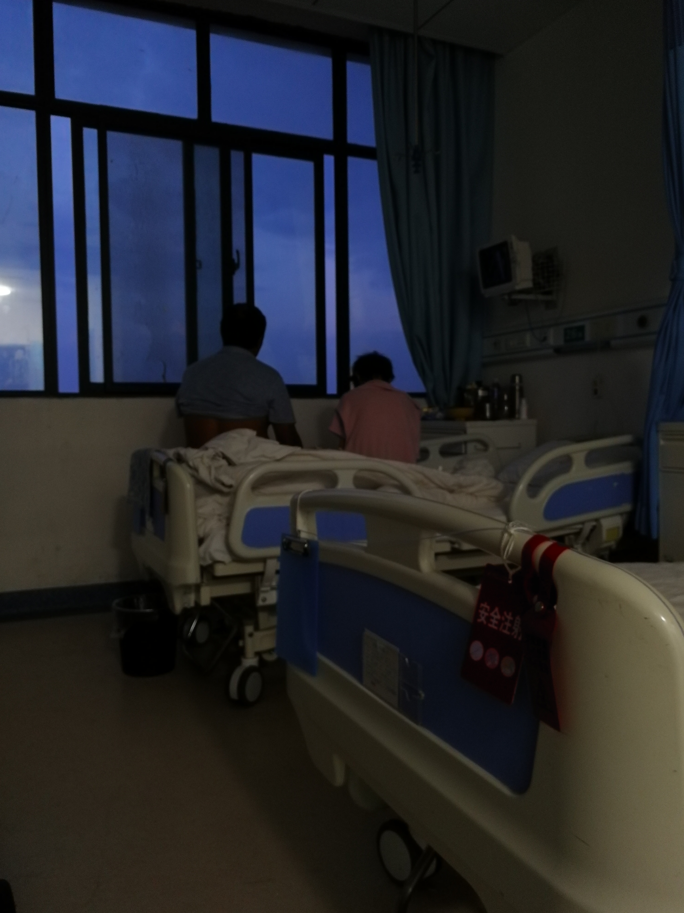
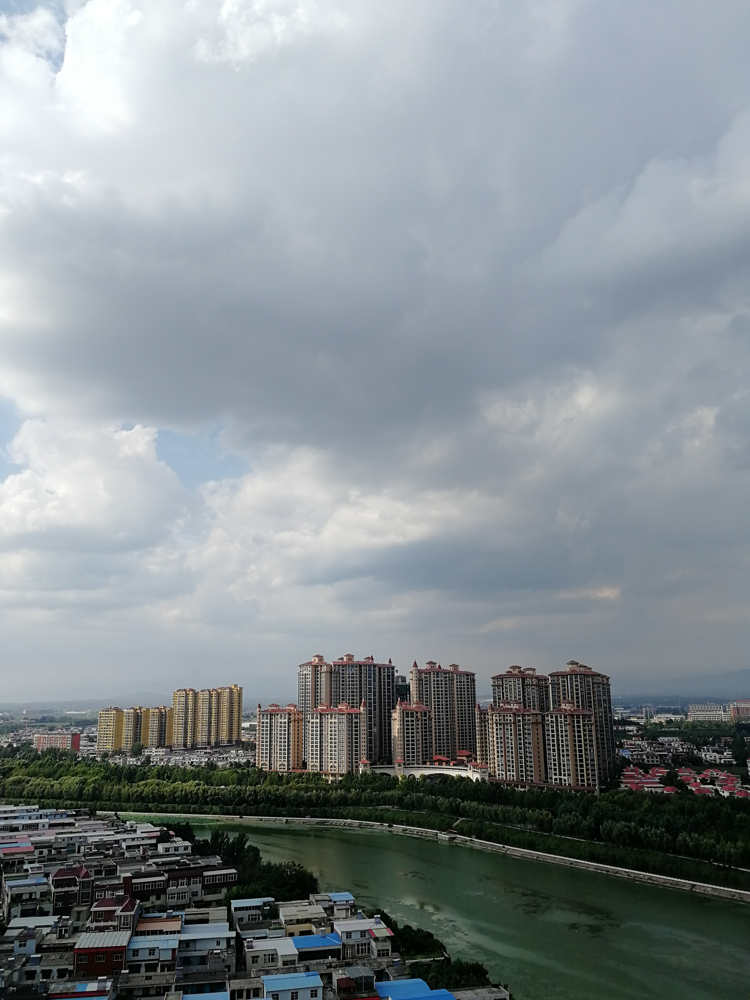
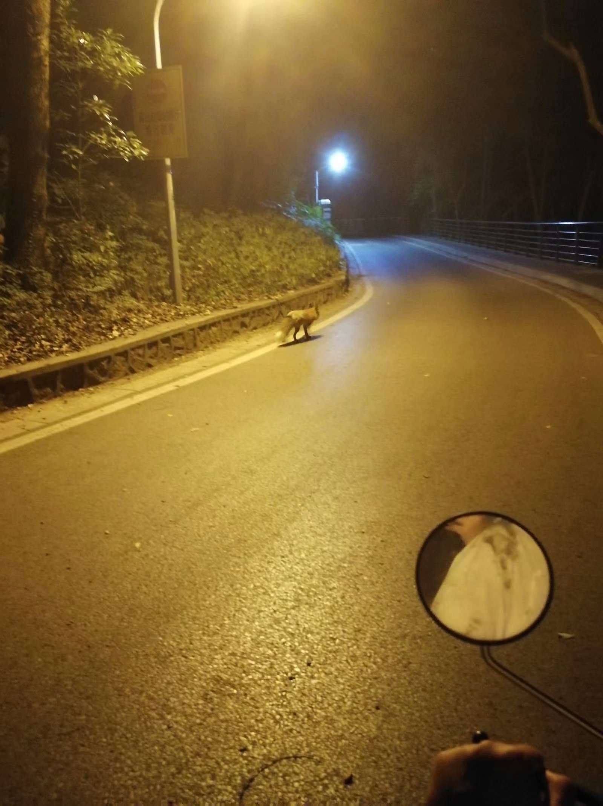
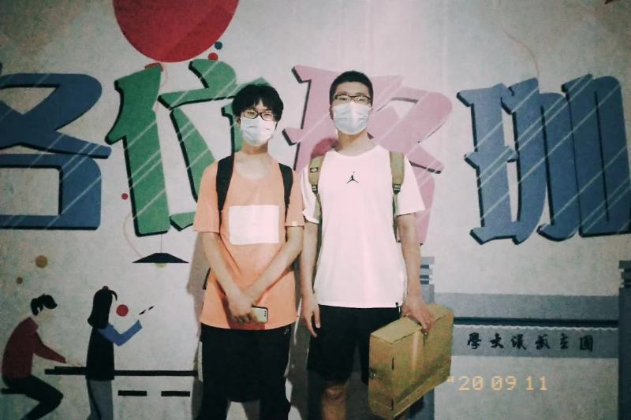
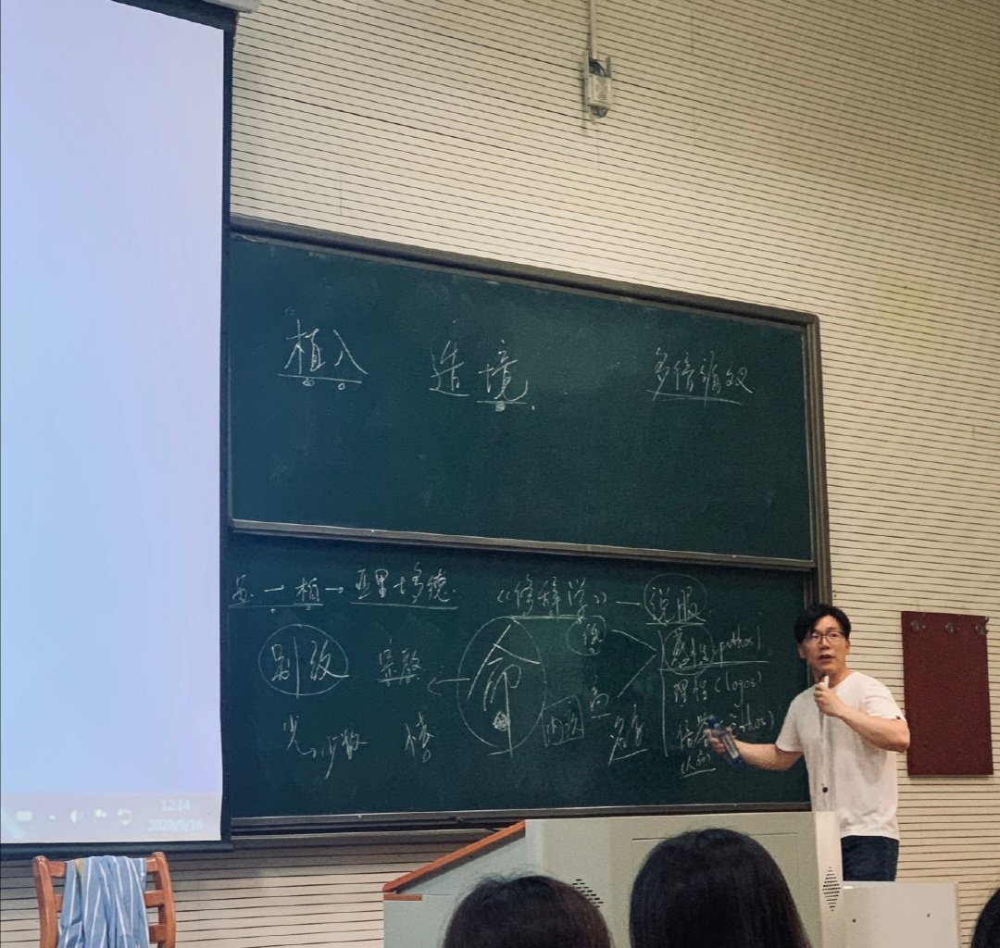
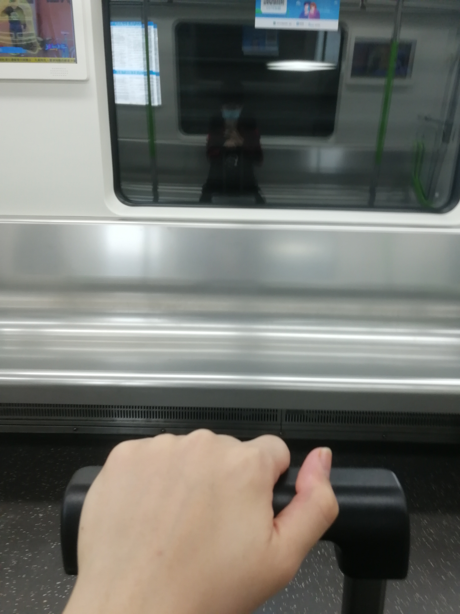
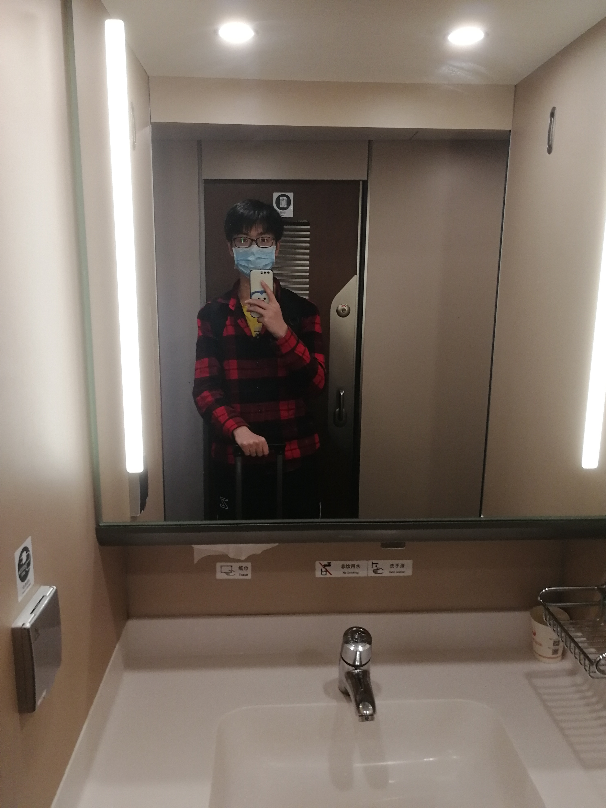
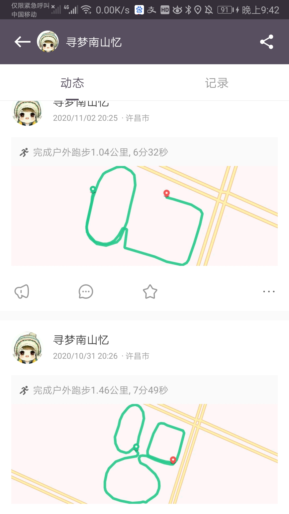

title: 时间会回答成长——我和我的2020
date: 2020-03-03 12:15:21
tags:
时间会回答成长——我和我的2020
TimeLine
1月
- 疫情预测
用python写了一个疫情预测程序


2月
- 准备美赛和CCF认证
- Hexo+Github搭建个人博客
3月
- 一刷Ag “Machine Learning”
心中念叨着”欲行此道，则务需把握算法背后的思想脉络，无论创新科研还是应用实践，皆以此为登堂入室之始”。
- 美赛云建模: 从”沙雕”到”NLP”的建模之旅。
大学最后一场数模比赛以H奖收尾
- 疫情结束后的聚会
很喜欢一群好朋友一块弹着吉他唱歌的感觉。

4月
- 刷完了剑指offer和leetcode Hot100
虽然依旧是个算法菜鸡

- 一面中科大MIRALAB折戟
- 开始套和弦进行原创
2020.3.29-2020.4.1 四天时间连续写出了四首原创。忽觉乐理知识有了微弱进步,对和弦级数的掌控变得自如。
5月
- 智能拥塞控制&&强化学习
花了一个月完成了夏老师课题组的project。从0入门Reinforcement Learning。
6月
- 完成了大学最后一门考试, 撒花。
- 唯一一次学期满绩
- 通过了夏老师课题组面试

7月
- 拿到清深offer
很幸运在2020.7.6-2020.7.9参加了清华深研院夏令营获得优秀营员。深知无法拿到更好的offer, 至此也算结束了我的保研之旅.附上感想总结:
感想链接
附赠打油诗一首:


- 开始了美好的假期, 也提前进入了研究生生活。


- 开始跟着zyf跑步

8月
- 完成大学最后的暑期实训,感谢邹dalao合作。

- OpenVae项目启动
很早就想建立一个许嵩语录仓库,今天终于启动了。写了新浪微博|腾讯微博的爬虫收集了部分许嵩语录。希望日后可以有更多的小伙伴一起维护, 附上链接：
https://github.com/xjywhu/OpenVae
- 在医院照顾姥娘了半个月
傍晚的时候, 看着隔壁床的一对夫妻看着窗外,觉得陪伴和健康是那么珍贵。


- 拿到中级软件设计师资格证书

9月
- 终于回”珈”啦！
时隔8个月, 终于回到了学校

- 夜游珞珈山, 偶遇神兽小珞珞

- 时隔3年再次成为珞珈山新主人

- 终于蹭到了陈铭老师的口语传播

- 拿到保研资格
最终排名4/258

- 开始体验生活
打卡杏园食堂,图书馆,网安新校区。去东湖静坐,在大循环看风景,和大家约饭。


10月
- 花旗小队再聚首
很开心大学能和一群好兄弟共同成长,各位前程似锦!

- 评优
第二次拿到国奖,第一次拿到三好学生标兵。本科巅峰了

- 推免
- 和冯兄游览武当山,可惜阴天错过了云海日出


11月
- 回家呆了半个月, 也开始跑步(虽然没坚持下来)



很喜欢晚上出来,走到体育场的感觉,跑步的时候会想以后如果在家工作, 早上日出去楼下买早餐, 步行5分钟到单位。中午回家午休,晚饭又约了朋友。晚上可以回家干自己想干的事儿,周末约了同学打球,也能时常和爸妈出去逛街,旅游。和在西北旺后场村晚上十点到出租屋倒头就睡一比。会觉得这才是人生。
- 拿到了腾讯实习offer
- 奔赴北京开启4个月的北漂生活
赶上了北京第一场雪, 也第一次来到了清北中科院

- 入职

12月
- 北分乒乓球赛打进了8强,恍然发现那年今日竟是国软巅峰

- 北漂人的聚会

- 网络平台部团建


- 申请了个人域名whalexiao
名字其实是个谐音梗, whale = 鲸鱼 = 劲宇。哈哈没错,是jing不是jin
Summary
2020年是我心态和想法变化最大的一年,从年初的迷茫焦虑,到年中的患得患失,再到下半年尘埃落定的坦然。很庆幸在人生的第二个重要关口,自己顺利通关,交上了一份当下看起来还算满意的答卷。但另一段新的游戏又开始了,希望自己可以保留好文牒和情怀,打通下一关。
2021想要完成的事儿
- 看一场嵩哥的演唱会
- 看一场国际乒联巡回赛事
- 和好朋友们计划毕业旅行
- 坚持记录生活,希望和朋友们多拍些照片hh
- 完成在武大还没有体验过的事儿
- 去樱顶看日出
- 东湖骑行
- 去珞珈山上跑步
- 在信操弹琴
- 在牌坊前拍照
- …
- 或许可以开始写回忆录了
- 机器学习&&深度学习
- 大量阅读计算机网络论文
- 开始思考未来方向: 读博or就业
希望2021年自己依然可以保持自律,既能低头做实事又能抬头看远方~
最后,希望2021国泰民安~大家新年快乐!2020埋下的遗憾,2021都会长出惊喜!